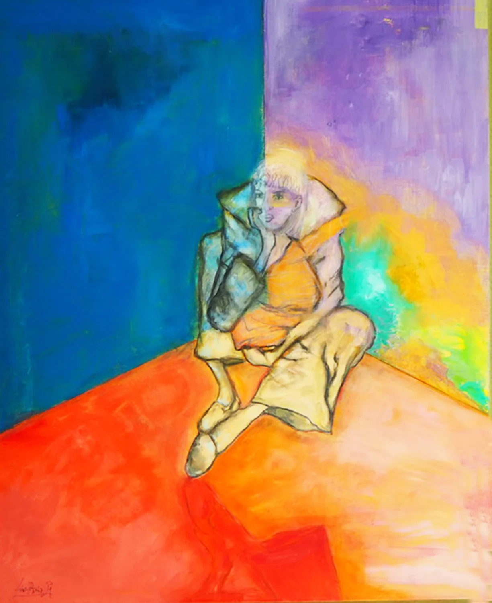
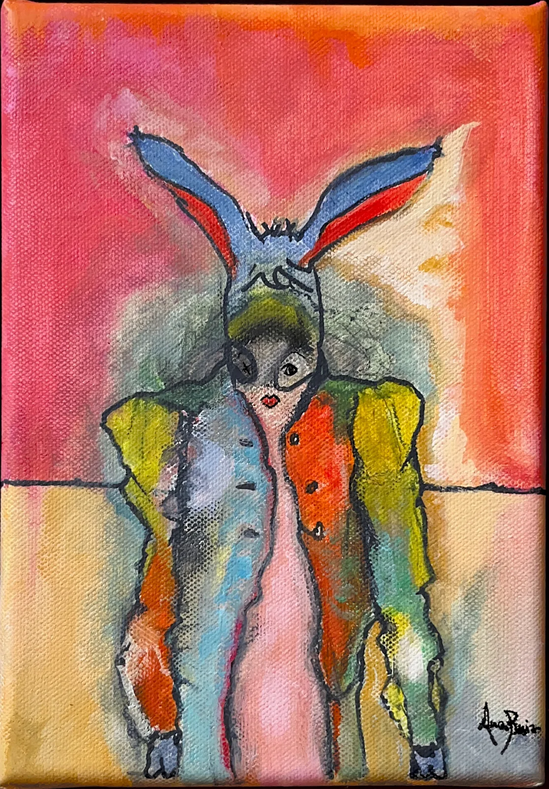
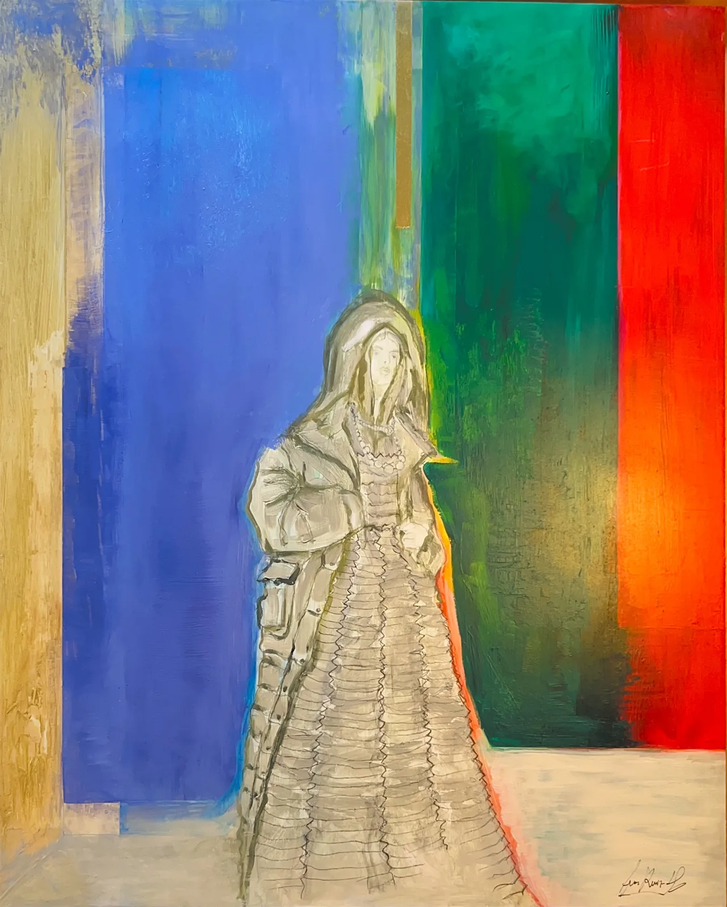

161ᵉ Salon de la Société versaillaise des artistes d’Île-de-France (2026)
Four canvases from the garment series, shown in Versailles.
Practical information
- Dates: Monday 2 to Sunday 15 November 2026
- Venue: Carré à la Farine, 70 bis rue de la Paroisse, 78000 Versailles
- Opening hours: 11 am – 6 pm (until 7 pm on 7 November) · closed on 11 November
- Opening reception: Saturday 7 November, 3 pm – 7 pm
- Free admission
The 161ᵉ Salon de la Société versaillaise des artistes d’Île-de-France (161st Salon of the Versailles Society of Île-de-France Artists) brings together, from 2 to 15 November 2026 at the Carré à la Farine, more than seventy artists from the region in painting, sculpture, printmaking and drawing. Founded in 1855, the Society holds this salon every year and awards prizes.
Ana Ruiz Llamazares presents four canvases from her garment series, Hypoderme, Épiderme, Deuxième peau and Peau d’âne: clothing as a map of intimacy, continuing the Peau d’âne exhibition.
Works on show

Hypoderme

Épiderme

Deuxième peau

Peau d’âne